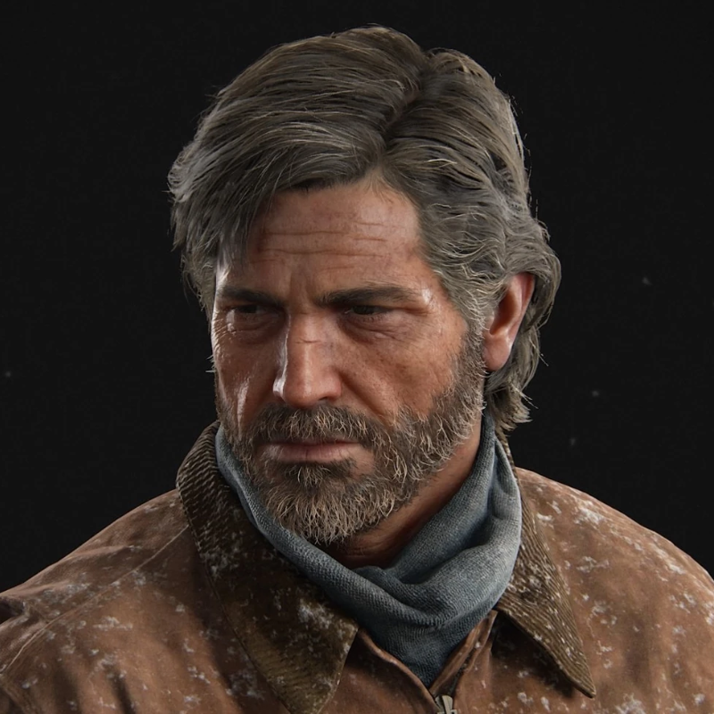
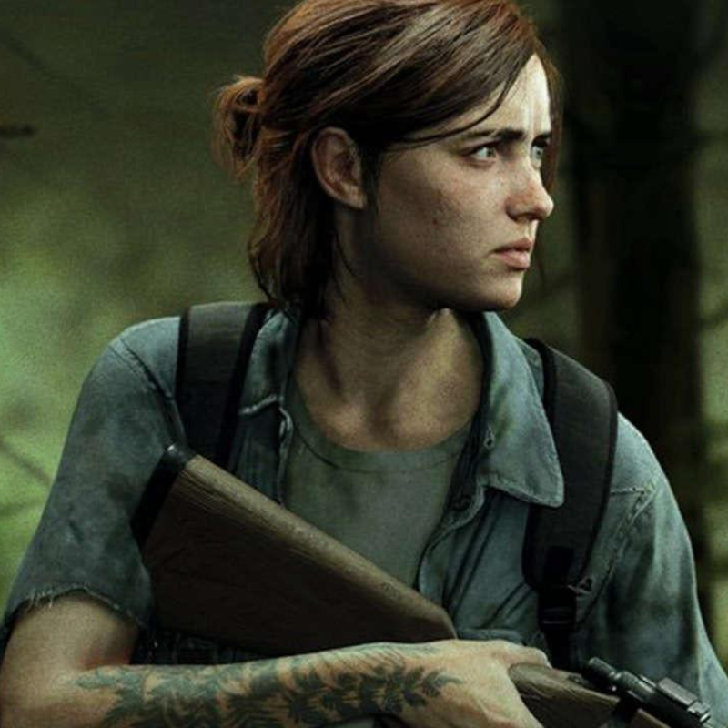
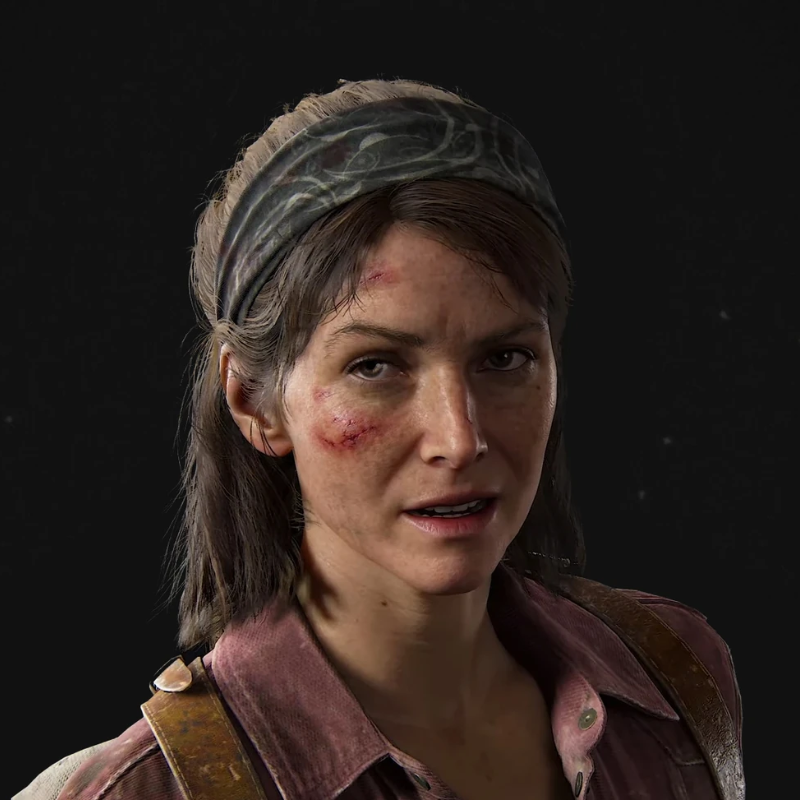
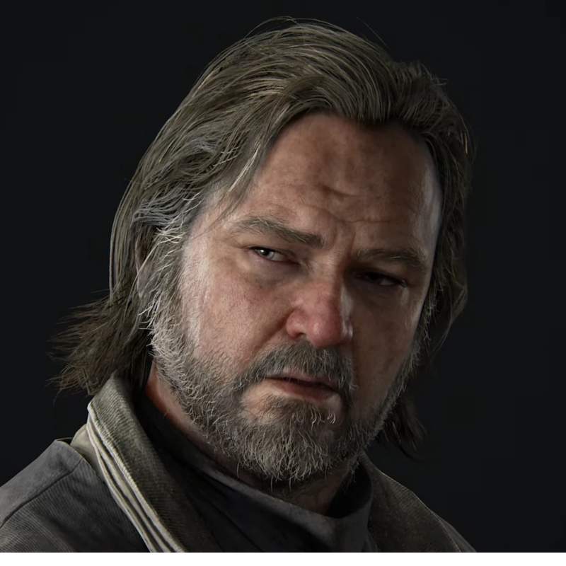
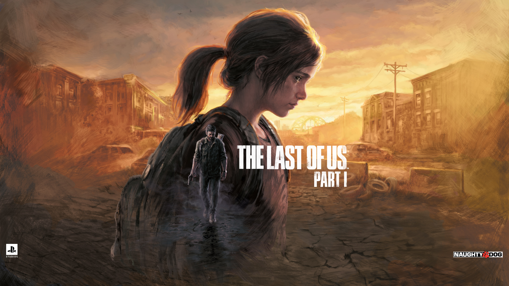

Joel Miller
Un sobreviviente endurecido que ha perdido a su hija y se convierte en el protector de Ellie.
Saber másEn un mundo post-apocalíptico devastado por una infección fúngica, Joel, un sobreviviente endurecido, se une a Ellie, una joven inmune al hongo, en un peligroso viaje a través de Estados Unidos. Juntos enfrentan peligrosos infectados y humanos hostiles mientras buscan esperanza y redención en un mundo desolado.

Un sobreviviente endurecido que ha perdido a su hija y se convierte en el protector de Ellie.
Saber más
Una joven inmune al hongo que se convierte en la esperanza para encontrar una cura.

Compañera de Joel, una mujer fuerte y decidida que lo ayuda en su misión.

Un superviviente paranoico que ayuda a Joel y Ellie a conseguir suministros.
Comparte tu historia, personaje favorito y por qué te apasiona The Last of Us.
Únete ahora